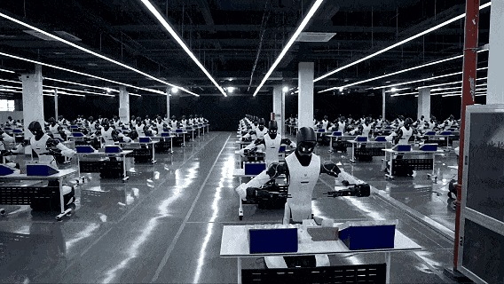
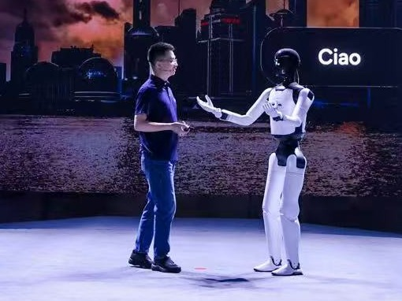
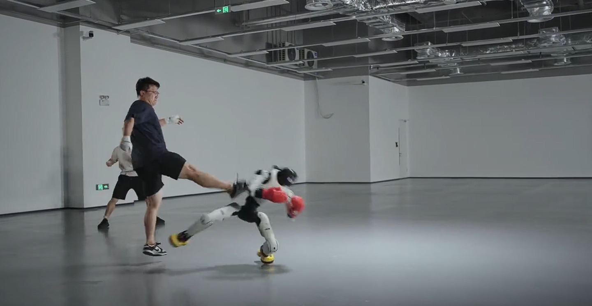
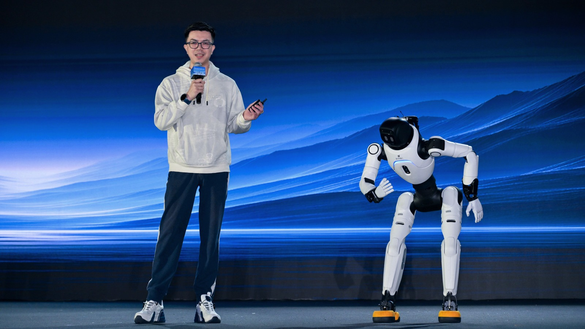
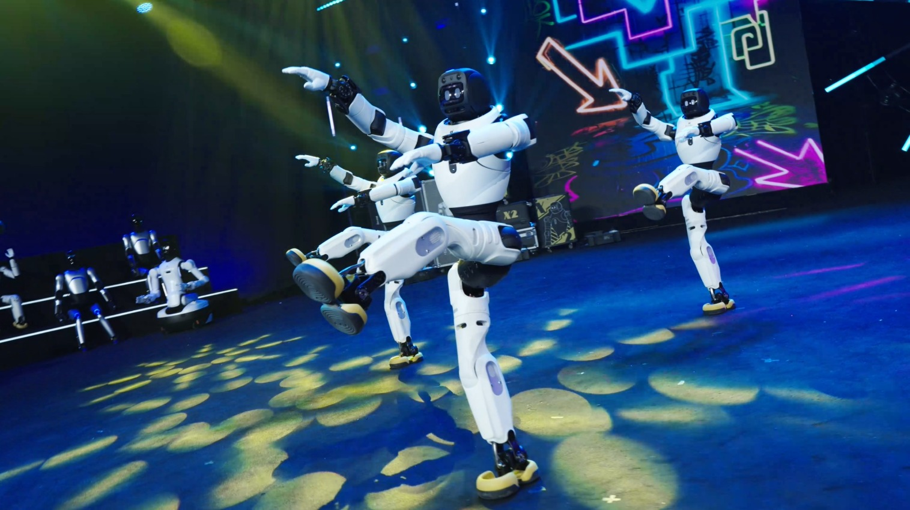
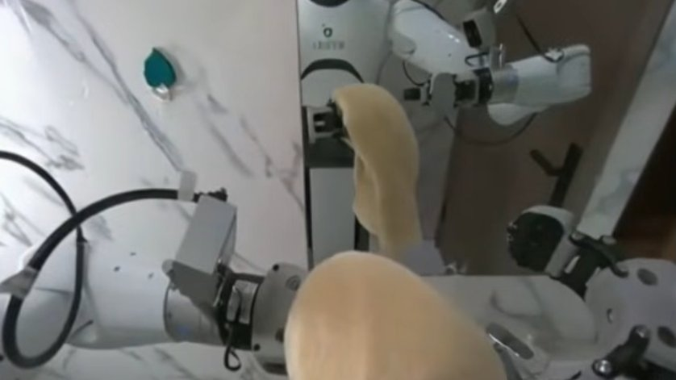
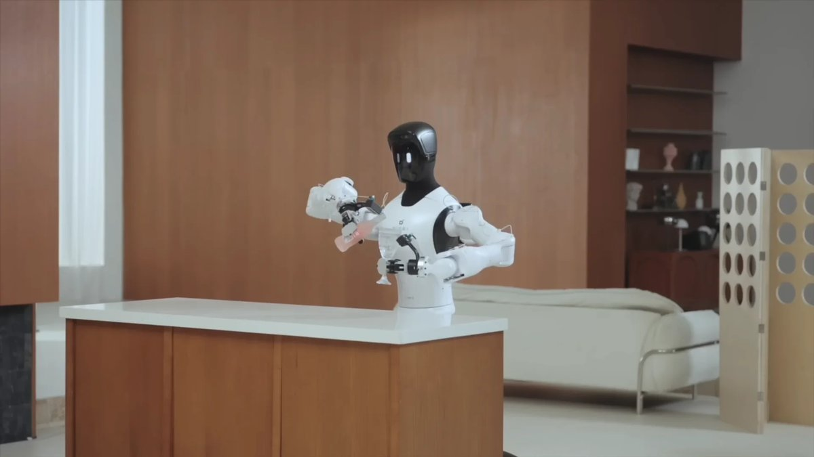

Agibot
29 models
5 quadrupeds · 14 humanoids · 7 robot AI models · 3 robot hands
5 quadrupeds
Year, newest first


14 humanoids
Year, newest first


7 robot AI models
Year, newest first







3 robot hands
Year, newest first


Robot photos are the manufacturers’ own.